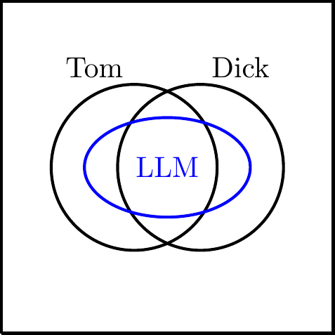
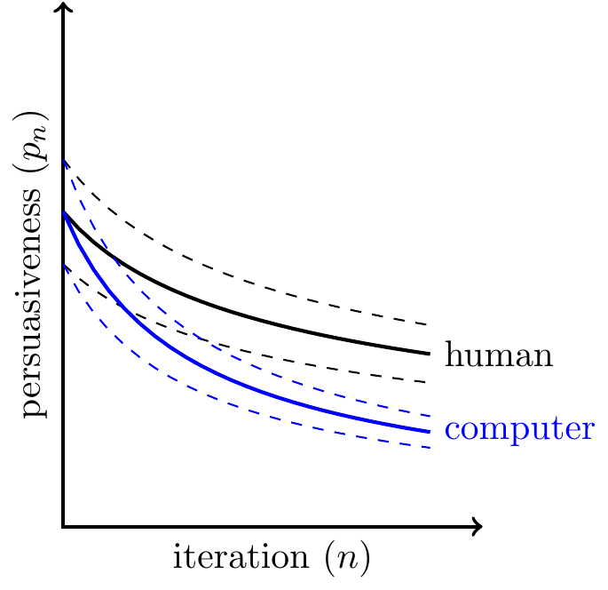
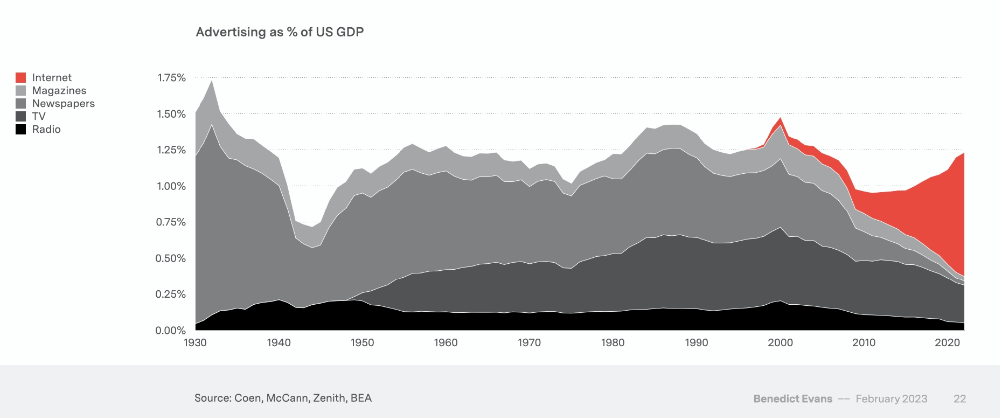

Summary
 This has benefited greatly from comments from members of the Integrity Institute, especially Grady Ward.
This has benefited greatly from comments from members of the Integrity Institute, especially Grady Ward.
==Still a draft, don’t circulate!==
Are LLMs likely to create superhumanly persuasive text? Will large language models (LLMs) be able to write messages more persuasive than those written by professional copywriters: messages which compel you to click a link, buy a product, or vote for a candidate?
There is an argument that LLMs would not be able to outperform humans: LLMs are trained to predict text, and the text they are trained on is generated by humans. Thus an LLM knows about the world only at third hand: \[\xymatrix{ *+[F:<5pt>]{\text{world}} \ar[r] & *+[F:<5pt>]{\text{human}} \ar[r] & *+[F:<5pt>]{\text{text}} \ar[r] & *+[F:<5pt>]{\text{LLM}} }\]
When you ask an LLM a question it generates an answer by predicting how it would be answered in its training data, which was generated by humans, and so we might expect an LLM to perform at best level with the average human.
However there are three ways in which LLMs could outperform humans.
(1) LLMs can combine the output of multiple humans. LLMs are trained on hundreds of billion of words of text, written by many different people. As a consequence: (1) the answer of an LLM to any given question is better than the answer of the average person in their training data – this is because people tend to write about things they know; (2) when an LLM interpolates between text generated by different people it can effectively combine their knowledge.
\[\xymatrix{ *+[F:<5pt>]{\text{world}} \ar[r]\ar[dr] & *+[F:<5pt>]{\text{human}_1} \ar[r] & *+[F:<5pt>]{\text{text}_1} \ar[r] & *+[F:<5pt>]{\text{LLM}}\\ & *+[F:<5pt>]{\text{human}_2} \ar[r] & *+[F:<5pt>]{\text{text}_2} \ar[ur] }\]
(2) LLMs can access tacit knowledge. Suppose an LLM could accurately predict what a human would do in every conceivable circumstance. By combining that information they might learn more about the world than they would just from asking questions to the human. Humans are far better at recognizing whether an object belongs to a category than at synthesizing a new object that belongs to a category. E.g. you can recognize whether or not a painting looks like your cousin but it’s notoriously difficult to paint a new picture that looks like your cousin.
(3) LLMs can be augmented with direct access to the world.
However changes to architecture could conceivably lead to super-persuasive text. There are three basic approaches:
Testing and selection. We could generate multiple variants, test each for persuasiveness, and then choose the best-performing. However this is already possible with human-written text so the addition of computer-generated texts to the pool of candidates would make a difference only if they had markedly different statistical properties, and there is no clear reason why this would be true.
Using tacit knowledge. Instead of directly asking an LLM to compose a persuasive text we could use a battery of prompts to search for the texts that are most persuasive. There is reason to expect this would be effective because human knowledge of persuasiveness is partly tacit, meaning that our ability to recognize whether a given text is persuasive outstrips our ability to create new persuasive texts. Because computers can evaluate the persuasiveness of texts at a far higher speed and lower cost this would allow us to systematically canvas the landscape of persuasion in a way that is not possible with humans.
Supervised learning. Instead of simulating human judgment of persuasiveness we can train a model directly on the true persuasiveness of text. The effectiveness of this will depend on the statistical properties of the data, and how reliably we can learn from observational data, but it seems plausible that this approach could uncover pockets of persuasiveness not yet discovered by humans.
We can project the future abilities of AI with data available today. Below I discuss a number of empirical facts which we could measure today and would help us predict the future capabilities of LLM-generated text. Facts like (1) the variance in persuasiveness between texts, (2) the diminishing returns of persuasiveness as more texts are created, (3) the correlation between true persuasiveness, human-estimated persuasiveness, and computer-estimated persuasiveness of a given text.
It is unclear whether super-persuasive messages exist. Finally there is a bigger question on how much more persuasive we can get. Over the last 100 years social scientists have continually invented supposed technologies of hyper-persuasion, they all turned out to be duds. We know that some messages are more persuasive than others but it is hard to know how much higher we can go: it’s possible that the most persuasive writers today are already close to the ceiling.
Setup

We are interested in the persuasive effect of a single short piece of text, e.g.:
- Effectiveness of an email in making people open an attached file.
- Effectiveness of a tweet in making people buy a crypto coin.
- Effectiveness of a blog post in making people vote for Ron DeSantis.
The persuasiveness of text is relative to an audience and a provenance. The same message will have a different effect on different people, at different times, and will depend on who it comes from. For concreteness assume in the rest of this post that the audience is the average American adult in 2023 and they receive the message unsolicited from a stranger.
Formal definition. We can think of a function \(p(t)\), where \(t\) represents a piece of text drawn from the space of all possible texts, and \(p(.)\) is its persuasive power: precisely, the average person’s probability of performing a certain action after seeing that text. The function \(p(t)\) will be basically flat for almost all values of \(t\) because in the space of all possible sentences the overwhelming majority are meaningless or irrelevant and so likely to have infinitesimal effects on whether you take a specific action.
I’m setting aside many related questions. I will not consider (1) AI maintaining a conversation (chatbots, catfishing, pig butchering); (2) AI sending customized messages based on the respondent’s demographics; (3) AI choosing who to send messages to, based on predicted persuadability; (4) repeated exposure to the same message. For each of these cases it seems unlikely that AIs could be super-humanly persuasive without also being super-humanly persuasive in the base case of creating a single message. However some additional considerations apply to the case of AI synthesizing recorded media (photos, audio, and video), because it is very difficult for a human to create, for example, a photo from scratch, while computers can do it very reliably. In addition recorded media has historically served as prima facie evidence that some event ocurred: as synthesized media becomes more prevalent that evidence-value is likely to decline.
We want to compare persuasiveness of text created by different types of authors:
Human subjects in a psychology experiment (e.g. undergraduates, mechanical turk participants)
Human employees of influence operation (e.g. Internet Research Agency, pig butcher scammers)
Human copywriters (e.g. marketing professionals)
LLMs in 2023 (e.g. GPT-4)
LLMs in the future: 2024, 2025, and 2050.
There is substantial variation in human ability to write persuasive copy. Copywriters are hired for their ability to come up with text that makes people perform an action, i.e. they are hired for their knowledge of the function \(p(.)\), and it seems there must be substantial variation in individual ability: some people are better than others at writing persuasive slogans.1
1 From the obituary of a famous direct-marketing copywriter: “When you read some of the greatest and most iconic headlines in copywriting history — such as, “7 HORSEMEN of the Coming STOCK MARKET APOCALYPSE” … “Shameless Two-Faced S.O.B.s!” … and, “Health Breakthrough News — Cholesterol’s EVIL TWIN”— smile and think to yourself, ‘Clayton Makepeace wrote that.’”
Social scientists have warned about hyper-persuasion many times in the last century. In the past 100 years there have been a dozen apparent discoveries of hyper-effective means of persuasion, whether based on subconscious associations (Bernays), conditioning (Skinner), subliminal messages (Packard), brainwashing (Sargant), the power of conformity (Adorno, Asch, Zimbardo), priming and nudges (Bargh, Thaler), or statistical profiling (Cambridge Analytica). In retrospect I think it’s fair to say that all these warnings were, at best, exaggerated.
Plain LLMs Will Not Exhibit Superhuman Performance
TO ADD: Treat each person as a probability distribution over strings of text, and we have 1M draws from each person. Then we get the average distribution. But at each step it’ll be a weighted average, so if you start off a string in French it’ll continue like the French speaker.*
In short: LLMs don’t perform tasks, they imitate humans performing tasks. The basic architecture of contemporary large language models (LLMs) is to predict the next word given a prior string of words, trained on a large corpus of written text. Thus if we ask an LLM to create a persuasive message it will predict a human’s answer to that request, and so we should expect it to respond with a super-humanly persuasive message only by accident.2
2 Lichtenberg said something similar about writers: “The critics instruct authors to stay close to nature, and they read this advice; but they always think it safer to stay close to authors who have stayed close to nature.”

There are some cases where LLMs outperform all humans. I discuss these cases in the rest of this section, and argue that generating persuasive text is not such a case. I will talk about an LLM’s ability to correctly answer questions but the same arguments equally apply to performing tasks. We can draw a Venn diagram (at right) showing the relationship between the questions that the LLM can answer accurately and the sets that individual humans can answer. I will suppose the LLM is trained on a corpus of text generated by two humans, Tom and Dick.
The LLM can outperform any given human. Because the LLM is trained on the text produced by more than one human. We know that LLMs can answer questions with an encylopedic range and across different languages, i.e. beyond the range of any single person.

For independent factual questions the LLM will be inside the union of the humans. Suppose we consider a set of factual questions where the answer to each question is independent of the others, e.g. the number of chromosones a specific animal has, or the number of moons belonging to a given planet. In this case any question that the LLM can answer will be answerable by at least one human, i.e. the LLM-answerable questions will fall inside the union of the human-answerable questions.
There are some questions which an LLM can answer that no human can answer. Some examples:
- An LLM can translate between any pair of languages. Presumably there are many pairs of languages for which there is no human who speaks both, so the LLM can perform a task that no human has ever been able to perform.
- An LLM can combine distinct pieces of information.
[UNFINISHED: in short LLMs are discovering latent representations from the language output of multiple humans, which they can then combine, producing output that no human was capable of.]
An LLM Answering a Question No Human Can
Consider the following simplified model: an LLM is trained entirely on strings with the following form:
| prompt | completion |
|---|---|
| cats are mammals | is true |
| mammals are animals | is true |
| cats are animals | is true |
The three statements above satisfy a law of logical implication (modus ponens). If the training set contains sufficiently many similar cases then the LLM may learn to apply the pattern to new cases such that, if the following two datapoints are in its training set,
| prompt | completion |
|---|---|
| Asterix is a Gaul | is true |
| Gauls live in France | is true |
then the model will answer “is true” to the prompt “Asterix lives in France.”
It is possible that no individual human knows the answer to both of the premises, and so no human can correctly answer whether Asterix lives in France, but the LLM can. Thus here the set of LLM-answerable questions extends beyond the union of human-answerable questions.
In this example we could say that the LLM has learned true statements and laws of logical implication, however of course this is only to the degree that the training data consists of true statements which satisfy the laws of logical implication. An LLM would equally happily learn false statements and invalid patterns of implication.3
3 If a set of statements are true then they necessarily will satisfy the laws of implication, but the converse does not hold.
Superhuman Persuasion from Iterative Testing
In practice people are likely to generate multiple candidates, test each in the field, and choose the highest-performing variant. However this would only change our conclusion about super-human persuasiveness if the distribution of persuasiveness is different between human-generated and computer-generated text.
Suppose we can generate arbitrarily many passages of text \(t_1,\ldots,t_n\), and the persuasiveness of each text is represented by \(p_1,\ldots,p_n\). It’s safe to assume that there will be diminishing returns in persuasiveness (\(E[p_{n+1}]<E[p_n]\)), both for human-generated and computer-generated text, however as long as there is some variance in persuasiveness then iterative testing will be worthwhile. Suppose that the first or most-promising generation of both a human and a computer are equally persuasive on average (\(E[p_1^H]=E[p_1^C]\)).

The persuasiveness of computer-generated copy could be higher after the iterative process for one of two reasons. These are empirical facts that should be relatively straight-forward to test, unfortunately I’m not aware of any literature that has useful results on these two questions.
(1) If computer-generated text has higher variance. \(V[p_n^H]<V[p_n^C]\). The returns to exploration will increase in the variance of the outputs (holding fixed the mean), and likewise the expected persuasiveness of the ultimately selected alternative will be higher.
I am skeptical that computer-generated text will have higher variance of persuasiveness than human-generated text. A common observation about LLMs is that they are less creative than humans at the same task. Variance can be increased by adjusting parameters of the model, e.g. generating lower-probability tokens by setting a higher temperature, but this will very likely decrease the average persuasiveness.
A more subtle point is the covariance of persuasiveness between each element in the sequence. If an LLM generated minor variations on the same basic pattern then we would expect high covariance between texts and consequently relatively lower returns to iterative selection.
(2) If computer-generated text has slower-diminishing returns. \(\frac{E[p_{n+1}^H]}{E[p_{n}^H]}<\frac{E[p_{n+1}^C]}{E[p_{n}^C]}\).
It is unclear to me whether we should expect the average persuasiveness of texts to decline faster for humans or for computers.
Superhuman Persuasion from Search
Estimating the persuasiveness of text with an experiment requires enormous experiments. Most text has fairly low rate of persuasion, e.g. typically advertisements have click-through rates of 0.1 percentage points or less. In such a case it would take 400,000 observations to measure the click-through rate to within 10% of its true value.4 For some actions it also takes a long time to run an experiment, e.g. if persuading people to vote in an election or to keep using a product.
4 Derivation: \[\begin{aligned} p &= 0.001\\ SD &= \sqrt{p(1-p)} = 0.03 \\ CI &= p * 0.1 = 0.0001\\ & \text{(95\% CI width)}\\ SE & = CI / 1.96 = 0.00005\\ & \text{(95\% CI needs 1.96SEs)}\\ N & = (SD/SE)^2 = 360,000 \end{aligned}\]
Instead of running an experiment we could ask people to estimate persuasiveness. We could simply ask “how persuasive is this text on a scale of 1-100?” We could either ask professionals or a representative sample of the population. This is not the ground truth but it requires vastly smaller sampler sizes to get an precise estimate.
We can summarize the effectiveness of the hybrid with the correlation of three metrics. Consider three different measures of persuasiveness:
- True persuasiveness. I.e. the true causal effect on click-through rate, which can only be estimated with a large and time-consuming experiment.
- Human-estimated persuasiveness. The response to a survey question about persuasiveness.
- Computer-estimated persuasiveness. This can be defined as the total probability of the sequence of tokens produced by the LLM (\(P(w_1,\ldots,w_n)\)).5
5 A technical note on generating high-likelihood text: if you are given a prompt and wish to generate a representative completion (given a distribution \(P(w_{t_1}|w_t,w_{t-1},\ldots)\)) then you can successively generate individual words in proportion to their probability at each step because the full distribution is separable. However if you are trying to generate the most likely completion it is not sufficient to generate the most likely word at each step. My impression is that most popular LLMs do in fact generate tokens incrementally because the loss in most cases is not too large (the alternative is to explore multiple steps ahead, a “beam search”).
The effectiveness of the hybrid strategy will depend the incremental value of human judgment. It is unclear how strong the conditional correlation is bewteen true persuasiveness and human-estimated persuasiveness. I.e. if the LLM generates two texts with equal probability, will humans have a high likelihood of telling which is more truly persuasive?
Superhuman Persuasion from Supervised Learning
Finally we could train a model using historical data on real-world persuasion. Instead of predicting what a human would say if they were asked to produce persuasive text we could train a model directly on examples of text where we know the true persuasive effect, from experiments.
Observational data may not be sufficient. Gordon et al. (2019) and Gordon et al. (2023) both attempt to predict the experimental effect of Facebook advertisments on conversions, using only observational (non-experimnental) data, and they fail: “despite having access to large-scale experiments and rich user-level data, we are unable to reliably estimate an ad campaign’s causal effect.” The latter paper say they have a dataset of 663 experiments.
Many platforms have huge datasets on persuasion. Facebook probably serves around 40 billion ad impressions/day (Assuming 4 billion active users/day, and 20 ad impressions/user/day.)6
6 For comparison “today’s vision datasets typically contain a few hundred million high-resolution color images from the web (e.g. Google has JFT-300M, OpenAI CLIP was trained on a 400M), but grow to as large as a small few billion.” – Andrej Karpathy in 2022.
Appendix: Studies on the Persuasiveness of Computer-Generated Text
Since 2022 there has been a small literature comparing the persuasiveness of human-generated and computer-generated text, where persuasion is measured by a human survey response before and after reading an article. The studies have all found that LLMs can generate somewhat-persuasive content, none show strong evidence that LLMs can create more-persuasive content than moderately competent humans.
- Bai et al. (2023)
- Goldstein et al. (2023)
- Hackenburg and Margetts (2023)
- Matz et al. (2023)
- Palmer and Spirling (2023)
- Qin et al. (2023)
See more details here.
Appendix: On Advertising and Persuasion
Increases in persuasive power should cause increases in expenditure on advertising. If computer-generated ads are more persuasive than human-generated ads then firms should be willing to spend more on each ad, and so the equilibrium price of advertising impressions will rise.7
7 Although the price of ads should increase it is unclear whether the quantity of ads shown would increase or decrease. In a simple model of ad-supported media the equilibrium quantity of ads is determined by (1) the curvature of demand from advertisers, (2) the curvature of disutility from consumers. An increase in the persuasive power of advertising will shift demand up but it’s not clear to me whether the curvature would change in one direction or the other. However we would expect more investment in media to attract user attention.
Aggregate advertising expenditure has remained at around 1% of GDP since 1930, implying relatively little change in the ability to persuade people.8 
Some very loose generalizations about human persuadability:
Human attitudes are highly sensitive to influences. A person’s adult attitudes, beliefs, and preferences, are highly sensitive to their upbringing and context: if your parents are Catholic then you are highly likely to grow up Catholic. The same is true for eating fish, enjoying country music, being a Democrat, taking your shoes off inside, and your attitude to sex before marriage. The correlations can only be partly explained by direct genetic or economic effects, implying that attitudes are highly sensitive to experience.
The effective means of persuasion are only crudely known. In the past 100 years there have been a dozen apparent discoveries of hyper-effective means of persuasion, as discussed above.
Carefully measured estimates of persuasive effects tend to be small.
Nevertheless large resources are devoted to persuasion,9.
9 McCloskey and Klamer have a 1995 paper titled “One Quarter of GDP is Persuasion”.
Appendix: On Synthesis
In a nutshell:
Q: Should we expect LLMs to exhibit superhuman performance? E.g. will they be able to create hyper-persuasive advertising copy?
As they’re currently used the answer is no. An LLM generates an answer to a question by predicting how a human would answer that question. So we could expect a flawless LLM to match human performance, but not exceed it.
However if we can query the LLM arbitrarily many times then the answer is likely yes. This is because human judgment has an asymmetry between recognizing and creating: our ability to recognize persuasive text exceeds our ability to create persuasive text. Thus an LLM could be used to search the space of all possible strings of text and find the one which maximizes human-estimated persuasiveness.
The same argument applies to many other cases. In many cases humans show a gap between (a) recognizing whether text has some property, and (b) creating text that has that property:
recognize (easy) create (hard) ___ is a persuasive slogan A persuasive slogan is ___ ___ is a funny joke A funny joke is ___ ___ is the Prime Minister The Prime Minister is ___ An LLM can be used to close each of these gaps: they can find the text which satisfies these properties.
An outstanding example is for images: neural nets first learned to match human performance in recognizing the properties of an image (e.g. recognizing horses, recognizing astronauts, recognizing Van Gogh’s style). They are now are able to synthesize new images that satisfy an arbitrary set of properties, exceeding the ability of humans to create such images manually.
Related.
Why do people have an asymmetry between recognition and production?
Factual vs logical asymmetry. - Hash function.
Extra Material
- Monty Python’s lethally funny joke.
Q: has there been progress over time? Have people got better at choosing values of \(t\) which maximize \(p\)?
- Aesthetic things: jokes, music, plays, novels. The surface p(.) changes, but also we accumulate examples which are better.
- Persuasion: history of advertising would say we discovered certain things: pretty girls, wording of slogans, etc. But share of GDP which is persuasion has been stuck at 1%.
- Inventions: wheels on luggage; lime with corn; chemical compounds – drugs that have certain properties.
Other Applications
- super-accurate medical diagnoses
- here there’s a ground truth that you can train LLMs directly on, so perfectly reasonable that they’d shoot past.
- super-good chess
- there’s a ground truth, though training on human play is a good shortcut to the frontier
- super-evocative prose
- abc
- prove theorems beyond human abilities
- abc
- super-groovy music
- abc
- super-beautiful paintings
- abc